第 3 章 马尔可夫链蒙特卡罗（MCMC）#
本章解决：第 2 章的抽样武器都要求"知道密度的形状"——可现实中大量目标分布只有未归一化的形状（贝叶斯后验的证据项、统计力学的配分函数 \(Z\) 算不出来）。MCMC 的思路拐弯：造一条马尔可夫链，让它跑着跑着收敛到目标分布，样本取自链的轨迹。本章先把马尔可夫链的数学（§3.1：转移矩阵、不变分布）打好，再讲 Metropolis 算法及其正确性证明——细致平衡（§3.2.2）、遍历定理（§3.3），然后进入统计力学与 Ising 模型（§3.4–3.5，相变！）、非对称提案的 Metropolis–Hastings（§3.6），最后是两大应用：计数（§3.7）与约束洗牌、coupling from the past 精确采样（§3.8）。 对照教材：Shonkwiler & Mendivil《Explorations in Monte Carlo Methods》第 3 章（pp.103–140，§3.1–3.8，公式编号 (3.1)–(3.29) 与笔记一致）。补充：Dunn & Shultis §6（MCMC 与 Metropolis——口径一致，Dunn 侧重实用调试技巧）。
| 关键词 | 事实 |
|---|---|
| 马尔可夫性 | 未来只依赖现在：下一步分布仅由当前状态决定 |
| 转移矩阵 | \(p_{t+1}=p_tP\)；\(p_t=p_0P^t\)（式 (3.3)(3.5)） |
| 不变分布 | \(\pi P=\pi\)（式 (3.6)）；正则链收敛到它，\(\pi=[37,34,41]/112\)（股市链） |
| Metropolis 接受率 | \(h(x,y)=\min\big(1,\frac{f(y)}{f(x)}\big)\)（式 (3.9)）——只需 f 的相对值 |
| 正确性证书 | 细致平衡 (3.12) + 提案不可约 ⇒ 目标分布是不变分布 |
| 遍历定理 | \(\frac1N\sum r(X_i)\to\mathbb E_\pi(r)\)（定理 3.1）——时间平均=空间平均 |
| Boltzmann 因子 | \(\Pr(\text{宏观态})\propto e^{-E/k_BT}\)；Ising 接受率 (3.27) 中 \(Z\) 消失 |
| MH 修正 | \(h(x,y)=\min\big(1,\frac{f(y)g_y(x)}{f(x)g_x(y)}\big)\)（式 (3.28)），提案可非对称 |
| Coupling from the past | 从无穷过去跑链 → \(X_0\) 是不变分布的精确样本 |
本章代码：nb/ch03.ipynb（种子 2026）。12 个实验：股市链收敛与谱隙、从链采样看直方图稳定、Metropolis 骰子（极小邻域）、提案切换（卡在 x=7 之困）、连续 Metropolis（步长效应）、细致平衡数值验证、遍历定理、Ising 2×2 精确枚举、Ising 相变扫描、Metropolis–Hastings 非对称校正、coupling from the past、图匹配计数。
实验索引
| # | 实验 | 书节 | 产出图 |
|---|---|---|---|
| 1 | 股市链收敛 + 谱隙 | §3.1.2 | out-3-1.png |
| 2 | 沿链采样直方图 | §3.1.1 | out-3-2.png |
| 3 | Metropolis 骰子 | §3.2.1 | out-3-3.png |
| 4 | 提案切换：卡深谷 | §3.2.1 | out-3-4.png |
| 5 | 连续 Metropolis 步长 | §3.2.1 | out-3-5.png |
| 6 | 细致平衡数值验证 | §3.2.2 | out-3-6.png |
| 7 | 遍历定理 | §3.3 | out-3-7.png |
| 8 | Ising 2×2 精确枚举 | §3.5 | out-3-8.png |
| 9 | Ising 16×16 相变扫描 | §3.5 | out-3-9.png |
| 10 | Metropolis–Hastings | §3.6 | out-3-10.png |
| 11 | coupling from the past | §3.8.2 | out-3-11.png |
| 12 | 图匹配计数 | §3.7 | out-3-12.png |
3.0 本章导图#
3.1 离散马尔可夫链（Discrete Markov Chains）#
马尔可夫链：把单次概率实验扩展成 \(\Omega\) 上的实验序列，每个 \(t=0,1,\dots\) 一次。\(X_t\) 记第 \(t\) 次结果，称过程在第 \(t\) 次迭代从状态 \(X_{t-1}\) 移动到 \(X_t\)。两大新颖点：(1) 下一步的概率依赖当前状态；(2) 从状态 \(x\) 出发通常只能到达 \(\Omega\) 的一小部分——\(x\) 的邻域（neighborhood）。本章只处理**时不变（time invariant）**链：转移概率与 \(t\) 无关。
适用场景：热力学系统逐时刻的变化、物种 DNA 序列突变、蛋白质折叠、股票日价、赌徒财富……关键特征：系统随机演化，但只依赖当前状态、不依赖全部历史（第 4 章的自回避行走恰好反例——它依赖全程历史，所以不是马尔可夫的）。
3.1.1 图上的随机游走（Random Walk on a Graph）#
图表示：状态 = 顶点；若一次迭代内 \(x\to y\) 可达则连有向边；每条边带概率 \(p_{xy}\)（当前在 \(x\) 时下一步选该边的概率）。从 \(x\) 一步可达的状态集就是邻域 \(N_x\)。出边概率归一：
链从某 \(X_0\) 出发（按**起始分布（starting distribution）**随机或直接指定），此后每步按当前状态的概率分布选边——马尔可夫链 = 图上的随机游走（第 4 章专论随机游走）。
书例（股市模型，Fig 3.2）：相对昨日，今日"涨/平/跌"：
- 昨日涨：今日 涨 0.3、平 0.2、跌 0.5；
- 昨日平：今日 涨 0.4、平 0.2、跌 0.4；
- 昨日跌：今日 涨 0.4、平 0.3、跌 0.3。
模拟一小条链：采样用第 2 章的任何轮盘赌法。cdf 反演需要逐行的累积分布矩阵 \(C\)：
伪代码：U~U(0,1)，while c_ij ≤ U: j++，得到下一状态。跑出的状态序列 \(X_1,X_2,\dots\) 是链的一个实例（instance）。另一种用法是对运行做直方图：链在各状态停留的时间占比，随 \(t\) 重绘直方图会看到先剧烈变化、后几乎不动——这就是正则马尔可夫链的基本性质：**不变分布（invariant distribution）**存在。若知道这些频率，就能判断市场"涨多于跌"、预测漂移。
换个直方图姿势：固定从"涨"出发、每次只迭代一步（采样 \(X_1\)），重复无穷多次做直方图——得到 \(X_1\) 的分布：涨 0.3、平 0.2、跌 0.5（正是"涨"行的转移概率）。对任意 \(t\) 的 \(X_t\) 同理。由此引出理解链的核心工具——状态概率向量（state probability vector）\(p_t\)：\(X_t\) 的概率分布，按约定取行向量。\(X_0\) 对应 \(p_0\)（起始分布，如 \([1\ 0\ 0]\) 表示确定从"涨"出发）。理解 \(p_t\) 的（长期）行为是理解马尔可夫链的主要目标。
3.1.2 链的矩阵表示（Matrix Representation）#
把 \(p_{xy}\) 排成矩阵 \(P=(p_{xy})\)——转移矩阵（transition matrix），每行和为 1（由 (3.1)）。矩阵不只是表格，还是计算工具：
股市链的转移矩阵：
从"涨"出发：\(p_1=[1\ 0\ 0]P=[0.3\ 0.2\ 0.5]\)（与上面 \(X_1\) 直方图一致）；\(p_2=p_1P=[0.32\ 0.32\ 0.36]\)；递归下去 \(p_t=p_0P^t\)（式 (3.5)）。书继续算：
分布迅速稳定到极限——不变分布，马尔可夫链的一般特征。
不变分布：正则马尔可夫链的 \(p_t\) 趋于 \(\pi\)，它因下式得名——一旦到达就永远停留：
（存在性与收敛性的证明——Perron–Frobenius 定理——完整放在本节末的「深入」折叠框；原书将其置于附录 B，本笔记按体例内联到对应位置。）"正则（regular）"的两个条件：
- 不可约（irreducible）：图中从每个顶点到每个其他顶点都有有向路径。这是混合条件——若图分裂成几个连通块，唯一的（非平凡）不变区域是整个状态空间，\(p_t\) 的极限不会唯一。
- 非周期（aperiodic）：不存在整数 \(d>1\) 使"从任何状态返回自身的迭代次数都是 \(d\) 的倍数"。违反则 \(p_t\) 振荡不收敛（书 Fig 3.3 的周期链：1↔2↔3 的三态链，返回时间都是偶数）。
股市例解 \(\pi P=\pi\)（精确解）：
深入：Perron–Frobenius 定理与完整证明（原书附录 B，内联于此）
证明的版本特化为行随机矩阵（直接适用于转移矩阵）；一般版本只要求矩阵非负。路线：振荡递缩 → 列收敛 → 特征值分离 → Jordan 形式收尾。
定理 B.1：设 \(P\) 是 \(n\times n\) 行随机矩阵且 \(P_{i,j}\ge\delta>0\) 对一切 \(i,j\)。则：(1) \(P\) 有特征值 1，对应规范化左特征向量 \(\pi^T\) 严格为正；(2) 其余特征值的模严格小于 1；(3) \(\displaystyle\lim_{n\to\infty}P^n=\mathbb 1\pi^T\)（\(\mathbb 1\) 为全 1 列向量），从而对一切概率向量 \(\alpha\)：\(\lim\alpha P^n=\pi\)。\(\pi\) 唯一——这正是 \(\pi P=\pi\) 存在唯一、\(p_t=p_0P^t\to\pi\) 的依据。
证明（书 B.1）：
不变子空间：\(P\mathbb 1=\mathbb 1\)；若 \(\langle f,\mathbb 1\rangle=0\)，则 \(\langle P^Tf,\mathbb 1\rangle=\langle f,P\mathbb 1\rangle=0\)，故 \(\mathcal S=\{v:\langle v,\mathbb 1\rangle=0\}\) 是 \(P^T\) 的不变子空间。
振荡压缩（Prop B.2）：记 \(\operatorname{osc}(f)=\max f-\min f\)，\(f_a\)、\(f_b\) 为最小/最大分量。由 \(P_{ij}\ge\delta\)，把 \((Pf)_i\) 拆成"\(\delta\) 份最小值 + 其余"：
列收敛（Prop B.3）：记 \(c_j^n\) 为 \(P^n\) 的第 \(j\) 列，则 \(\operatorname{osc}(c_j^{n+1})\le(1-2\delta)\operatorname{osc}(c_j^n)\to0\)，故 \(c_j^n\to\pi_j\mathbb 1\)（几何速率 \(C(1-2\delta)^n\)）；于是 \(P^n\to\mathbb 1\pi^T\)。由 \((\mathbb 1\pi^T)P=\lim P^{n+1}\) 得 \(\pi^TP=\pi^T\)；\(P^n\) 行随机保证 \(\pi\) 是概率向量。
特征值分离（Prop B.4）：对 \(f\in\mathcal S\)，\((\hat{P^T})^nf\to0\)——限制算子的一切特征值模 \(<1\)；\(P^T\) 的谱 = {1} ∪ 上述，故 \(P\) 只有 1 的模为 1。
推论 B.5：\(P\) 不可约且非周期（不必正）时，某幂 \(P^n\) 是正矩阵，对它用定理即得唯一正随机行向量 \(\pi\) 满足 \(\pi P=\pi\)（书用 \(P^3\) 的情形做唯一性桥接：\(\phi_2P=\phi_1P^2=\pi P^3=\pi\) 与 \(\phi_2P^3=\pi\) 联立）。
Jordan 观察（Prop B.6）：\(P=C^{-1}JC\)，\(J^k\to L\)（仅 (1,1) 为 1），且 \(C^{-1}\) 的第一列恰为 \(\mathbb 1\)（由 \(CC^{-1}=I\) 的点积约束唯一解出），故 \(\lim P^k=C^{-1}LC=\mathbb 1\pi\)——外积收尾。∎
与本笔记的接缝：§3.2.2 Metropolis 链的正则性（自环 ⇒ 非周期、提案不可约 ⇒ 不可约）；§4.7.2 的逃逸速率 \(\lambda<1\)（Prop B.4 的瞬态版）；ch03 习题 2 的谱隙是几何速率 \(1-2\delta\) 的精细版。
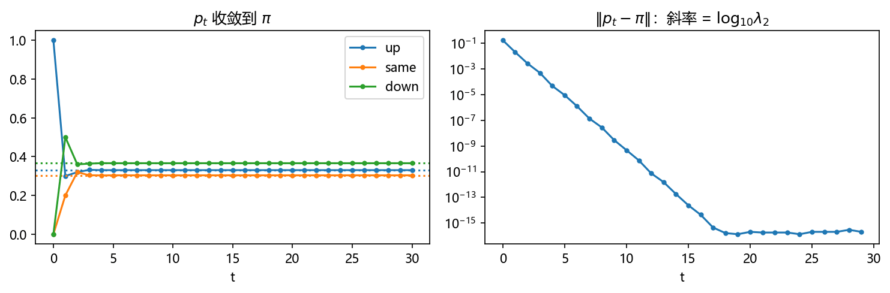
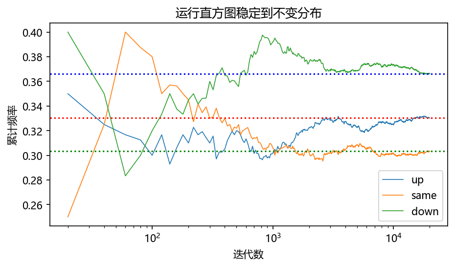
3.2 MCMC 抽样——Metropolis 算法（The Metropolis Algorithm）#
历史：1953 年 N. Metropolis 等发表 "Equations of state calculations by fast computing machines"——为解决原子/分子随机运动带来的物理问题（可测量 = 位置、取向、速度分布上的期望）。该算法被列为对科学与工程影响最大的十大算法之一。脚注：据某些资料，真正发明者其实是第三作者 Rosenbluth（咨询了 Teller）。
核心思想：构造一条以目标分布为不变分布的马尔可夫链。看起来难，但转移概率的自由度让这件事出奇简单。
从拒绝采样（第 2 章 §2.8）出发改造：那里有目标密度 \(f\)、全局统一的提案 \(g\)、接受纪律 \(h\)。MCMC 把提案按当前状态定制：\(g_x(\cdot)\) 对每个 \(x\in\Omega\) 定义——这是 Metropolis 力量的来源，代价是样本相关了（不再是 i.i.d.，§3.3 处理后果）。
对 \(g_x\) 的唯一限制是对称性：
看似苛刻实则自然（"从我出发提议去你的概率 = 从你出发提议来我的概率"）。可以放松为 \(g_x(y)>0\iff g_y(x)>0\)，代价是接受纪律要修正——这就是 §3.6 的 Metropolis–Hastings。
接受纪律（与拒绝采样的本质区别：也依赖当前状态 \(x\)）：
语义：提案 \(y\) 比当前 \(x\) 概率高（\(f(y)\ge f(x)\)）→ 必收；否则按比值 \(f(y)/f(x)\) 概率接受。和拒绝采样一样只需 \(f\) 的相对值——归一化常数不需要，这正是 MCMC 能处理贝叶斯后验/配分函数的原因。
Metropolis 伪代码：
select x // 链从状态 x 出发
Loop over repetitions t = 1, 2, ...
select y from Nx using density gx // 提案 y
put h = min(1, f(y)/f(x)) // 接受概率
if U ~ U(0,1) < h then x ← y // 否则 x 不动
// histogram x
end Loop
3.2.1 三个例子（Some Examples）#
例 1：骰子（极小邻域）。目标：双骰子和的分布 \(f=[0,0,1,2,3,4,5,6,5,4,3,2,1]\)（\(\Omega=\{2,\dots,12\}\)）。极小邻域：每个状态只能提议相邻（\(x\pm1\)，各 ½；边界加自环），提案矩阵对称：
返回值显然相关（在 5 附近时下一个必是 4 或 6）——MCMC 的价值在于足够多迭代后统计量正确。书 Alg 3.1 给出完整代码，5,000 个样本的直方图（Fig 3.4）贴合三角形目标。
例 2：极大邻域。\(N_x=\Omega\) 对一切 \(x\)（任意状态等可能提议任意状态，各 1/11）。此时 \(g_x(\cdot)\) 与 \(x\) 无关——等价于独立采样（但接受纪律 (3.9) 仍是二元的）。
例 3：提案切换（proposal switching）。实际 MCMC 的常见病：极小邻域下链会卡在局部极小（长时间出不来）；极大邻域下链探索不深（极端区域采不充分）。药方：两种提案混着用。书演示（Fig 3.5）：目标 \(f(x)=1/p(x)^2\)（骰子和概率的倒数平方，\(f(2)=f(12)=36^2,\dots,f(7)=6^2\)）——只用品德极小邻域的 run 过不了 \(x=7\) 的深谷；90% 极小 + 10% 极大的切换就恢复正常。
例 4：连续链。目标 gamma 型 \(f=0.5x^2e^{-x}\)（\(\Omega=[0,\infty)\)，书 Fig 3.6）。原点有边界效应：\(y<0\) 不能收，但提案又必须对称。处理：提案取 \([x-1,x+1]\) 上的均匀密度（长 2、以 \(x\) 为中心），提议出负数就原地不动（等价于自环）——不对称性全部推给接受纪律。这与离散例里边界自环 \(1/2\) 完全同构。
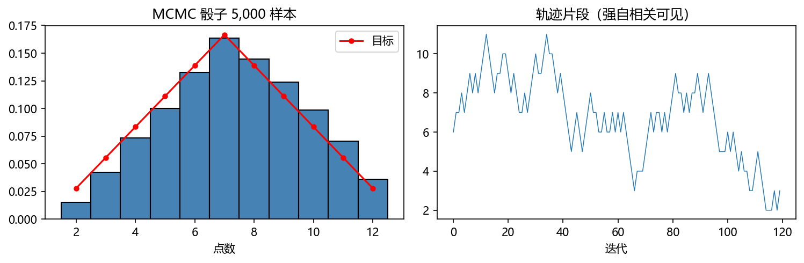
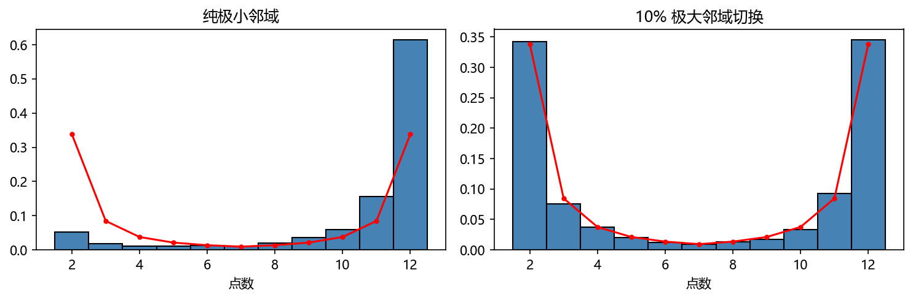
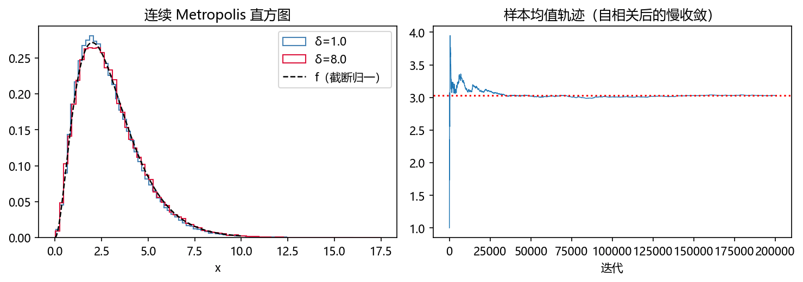
3.2.2 Metropolis 为什么有效？（Why Does It Work?）#
概率质量的流入流出图像：把 1 单位"概率质量"想象成沙子，链每迭代一步，各状态的沙沿有向边流出、同时有沙流入。"流出 \(x\)"的量 = \(x\) 的质量 × 各边份额：
不变分布要求对每个 \(x\) 流入=流出：
（这就是 \(\pi P=\pi\) 的第 \(x\) 列重述。）更强的逐对条件——细致平衡（detailed balance）：
任何一对状态彼此交换的质量两两相抵，则 (3.11) 自动成立。
验证 Metropolis 链满足细致平衡。转移概率 = 提案 × 接受（先被提议、再被接受）：
假设目标 \(f\) 就是不变分布，验证 (3.14)：
不妨设 \(f(y)>f(x)\)：则 \(h(x,y)=\min(1,\cdot)=1\)、\(h(y,x)=f(x)/f(y)\)，两边分别变成
由提案对称性 \(g_x(y)=g_y(x)\)（式 (3.8)），两边相等。细致平衡成立 ∎。
正则性收尾：总有可停留的状态（\(f(y)\ge f(x)\) 对一切 \(x\) 的 \(y\) 处自环概率为正——提案到自己必被接受），故链非周期；再假设提案过程 \(g\) 不可约，则链不可约。于是：在这些条件下，Metropolis 链以 \(f\)（的固定倍数）为不变分布，\(p_t\) 渐近趋于它。
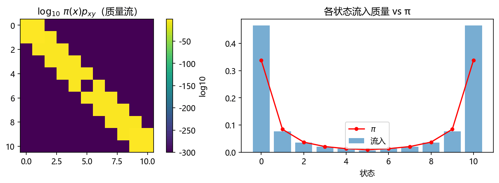
3.3 MCMC 抽样与遍历定理（MCMC and the Ergodic Theorem）#
知道"分布收敛到 \(\pi\)"还不够支撑 MCMC：那只保证等够久后取一个状态是 \(\pi\) 样本。MCMC 的真正用途是计算期望——需要 \(\pi\) 下的许多样本，而链的样本相关。任意相关的样本当然不行（可能全相同），但马尔可夫链产生的相关样本不任意：
定理 3.1（遍历定理 Ergodic Theorem）
设 \((X_n)\) 是不可约非周期的马尔可夫链，状态空间 \(\Omega\) 有限，平稳分布 \(\pi\)；\(r:\Omega\to\mathbb R\) 任意函数。则
证明思路（书给出）：\(\Omega=\{y_1,\dots,y_m\}\)，\(n_j\) = 前 \(N\) 步中 \(X_i=y_j\) 的次数，则
因为 \(n_j/N\to\pi(j)\)（各状态的访问频率收敛到不变概率）。∎
时间平均 = 空间平均——大数定律的马尔可夫版（i.i.d. 换成"相关性衰减"的样本）。这条定理就是 MCMC 记分的合法性证书。概率论复习对应：强 LLN 的推广，证明走切比雪夫 + 协方差衰减路线。
3.4 统计力学（Statistical Mechanics）#
书注明本节可跳过而不失连续性；但它解释了 Metropolis 算法里 Boltzmann 因子的来源——算法 1953 年的诞生动机就是从 Boltzmann 分布采样。
统计力学：研究拥有天文数字个状态的系统的宏观性质。原型： confined 区域里的气体。精确模型要追踪每个分子的位置、动量、量子态、自旋……一立方米空气约 \(10^{25}\) 个分子，仅"盒子中的粒子"近似（只记位置动量）就要 \(6\times10^{25}\) 个坐标描述状态。
- 微观态（microstate）\(x\)：系统的完整规格——系统的一切性质都可由它确定。
- 相空间（phase space）\(\Omega\)：所有可能微观态的空间（因量子力学而有限但巨大）。
- Ising 模型：最简单的系统之一——\(N\) 个格点，每个处于两种构型之一（自旋 spin：+1 或 −1）。它真实近似磁性材料：电子是微型磁体，成对上下自旋相互抵消，未配对电子使材料在常观尺度显磁性——Ising 格点扮演未配对电子的原子。
- 宏观可观测量（macroscopic observables）：实体聚合决定的、常观尺度可测的性质（气压、温度；Ising 的磁矩 = 净上自旋数）。
为什么空气不会自己挤进墙角、铁不会自发磁化？——把相空间按宏观性质**分块（partition）**再数微观态：盒子只有 1 个粒子时"挤在角落"占相空间的 1/10；两个粒子约 1/100；\(10^{25}\) 个粒子时
命中一次的期望采样数是 \(1/p=10^{10^{25}}\)；就算每秒采 \(10^9\) 个点、采满宇宙年龄 \(10^{18}\) 秒，也只碰过 \(10^{27}\) 个点——沧海一粟。Ising 同理：全同向自旋的状态只有 2 个，而相空间 \(2^N\)——\(100\times100\) 格子的相空间 \(2^{10000}\approx(10^3)^{1000}\approx10^{3010}\)，远超宇宙质子数估计 \(10^{80}\)；净自旋 0 的状态数 \(\binom N{N/2}\approx1.59\times10^{3008}\)。系统几乎必然待在微观态数最多的宏观块里。
组合数近似（书 aside，也用于后文）：CLT 逼近二项随机变量（\(B\)=上自旋数，\(p=q=1/2\)，\(\mu=n/2\)、var \(=n/4\)）：
（脚注：更优的是 Stirling 公式 \(n!\approx\sqrt{2\pi n}(n/e)^n\)，两者给同一结果。）
熵（entropy）：这些计数大得没法直接用，取对数：
\(k_B\) 是依单位而定的常数（Boltzmann 常数），\(n\) 是所数分块中的状态数。热系统倾向于占据熵最大的宏观态。
能量：微观态总伴随能量 \(E\)。"盒子中粒子"有动能 \(\frac12mv^2\)；Ising 的能量含相邻自旋交互 \(-Jx_ix_j\)（\(J\) 度量交互强度）及外磁场项 \(-Hx_i\)。
两系统接触（仅换能量）：\(N=N_1N_2\) 个联合微观态，熵 conveniently 相加、能量相加：
能量将如何流动？联合系统最大化总熵。由 (3.18) \(E_2=E-E_1\)，对 \(E_1\) 求极值：
把这个被均衡的量取倒数定义为温度：
平衡时 \(T_1=T_2\)；能量从高温流向低温。最终态的熵 ≥ 两孤立系统熵之和（约束变松了）。
Boltzmann 因子：小系统（系统 1）泡在热库（heat bath）（系统 2，大得多、维持恒温）里。问：小系统处于能量为 \(E_1\) 的宏观态 \(M\) 的概率？它正比于联合微观态数 \(N_1+N_2\) 中对应的部分，而热库占主导。把 \(S_2(E_2)\) 在 \(E_2=E-E_1\) 泰勒展开（用 (3.19)）：
由 \(S_2=k_B\log N_2\) 即 \(N_2=e^{S_2/k_B}\)：
因子 \(e^{-E_1/(k_BT)}\) 就是 Boltzmann 因子：低能量构型比高能量的更可能，且精确给出了这如何依赖温度。
Boltzmann 分布与配分函数：微观态密度与归一化常数
\(Z\) 叫配分函数（partition function）——远不止归一化：它是推导热力学性质的中心角色（超出本书范围）。宏观可观测量的期望（统计力学标准记号 \(\langle\cdot\rangle\)）：
困难一目了然：\(\langle M\rangle\) 需要 \(Z\)，而 \(Z\) 是天文数字项的和。MCMC 的解法：直接从 \(f\) 采样，\(Z\) 根本不用算（式 (3.9) 只用比值）。
3.5 Ising 模型与 Metropolis 算法（Ising Model and the Metropolis Algorithm）#
目标：模拟 Ising 模型，计算各温度下的磁矩 \(\langle M\rangle\)（式 (3.24)，即 (3.23) 取 \(M\)=自旋和）。
相空间：格点 \(\Lambda\)（\(\pm1\) 自旋），每个格点选一个自旋 = 一个构型/微观态 \(x\in\Omega\)；\(M(x)\)=该构型自旋之和（正负参半则接近 0）。记号简化：
能量函数（无外场）：
相邻自旋同向使能量降低——磁化的微观根源。实现用二维规则网格 + 周期边界条件（periodic boundary condition）：最后一列与第一列相邻、最后一行与第一行相邻（拓扑上把格子弯成环面 torus）。备选自由边界条件：边界点只有 3 个邻居、角点 2 个。内部点 \((i,j)\) 的邻居：\((i-1,j),(i,j-1),(i,j+1),(i+1,j)\)。
接受纪律退化成 Metropolis 原始形式：由 (3.21)，
\(Z\) 消失了——这就是 MCMC 能处理统计力学的全部秘密。
Burn-in（烧入期）：初始构型不大可能是 Boltzmann 样本；算法随运行渐近逼近 Boltzmann 分布，所以统计不能从第一步记起，要从某个点之后才开始记。烧多久没有通解，只能实验确定。
算法（每次翻转一个随机选中的自旋作为提案）：
initialize β; initialize x (L×L lattice); calculate Ex; M = 0
loop t = 1, 2, ... burnin+nTrials:
select (i,j) equally likely; y ← x; y_ij = −x_ij // 提案
calculate Ey; h = min(1, e^{−β(Ey−Ex)})
if U < h then x ← y
if t > burnin: M ← M + Mx // 记账
⟨M⟩ per spin = (M/nTrials)/L²
2×2 精确例子（自然单位 \(k_B=1\)，自由边界）：16 个微观态全枚举。高温 \(T=100\)（\(\beta=0.01\)）：Boltzmann 因子全部 ≈1，各态几乎等概（\(Z=16.004\)）；低温 \(T=1\)（\(\beta=1\)）：因子横跨三个数量级（0.018 到 54.6），全同向低能态占约 90%，反平行高能态几乎绝迹（\(Z=121.22\)）。
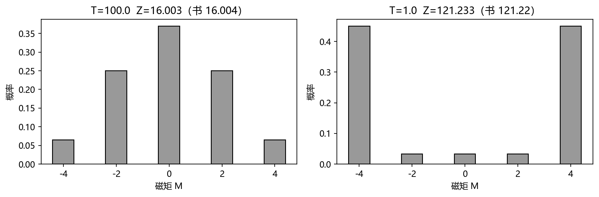
相变（phase change）与居里点（Curie point）：磁矩分布（书 Fig 3.7）高温时单峰钟形（上下自旋对半最可能）；低温时双峰（全上或全下最可能）——系统经历了相变，临界温度叫居里点。极简模型却保有相变，是 Ising 模型理论趣味的核心。温度若降到居里点以下太快，系统锁进上/下自旋"岛屿"拼贴的亚稳态（metastable suboptimal states）（书 Fig 3.8）；降温足够慢，畴域生长直至全上或全下——这个慢降温过程叫退火（annealing）（第 5 章模拟退火的物理原型）。书 Alg 3.2 给出 2×2 退火代码。
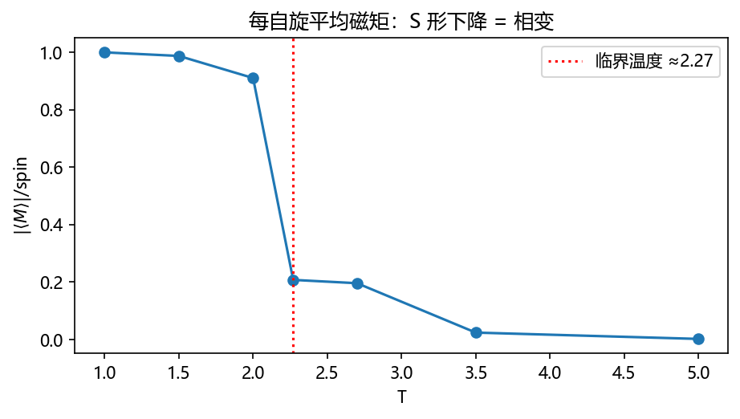
3.6 Metropolis–Hastings 算法（The Metropolis–Hastings Algorithm）#
到现在提案都要求对称。Hastings 的推广：把提案的非对称性吸收进接受纪律，细致平衡照旧。转移概率仍是 (3.13)：\(p_{xy}=g_x(y)h(x,y)\)。细致平衡要求
若 \(f(y)g_y(x)>f(x)g_x(y)\)，希望 \(x\to y\) 必收，即 \(h(x,y)=1\)；解出反向：
由对称性得统一式：
直接推论：\(g_x(y)\ne0\iff g_y(x)\ne0\)（只需"互相可达"，不必等概率）。对称提案时 (3.28) 退化为 (3.9)——Metropolis 是 MH 的特例。
书例：重跑骰子实验，提案非对称——向上步提议率是向下步的 2 倍（\(g_x(x{+}1)=2/3,\ g_x(x{-}1)=1/3\)）。纯 Metropolis 的直方图整体偏向高端（错），加 Hastings 修正恢复正确密度（书 Fig 3.9，Alg 3.3）。
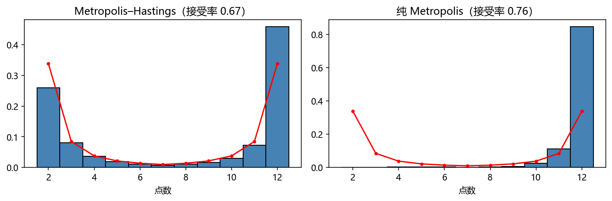
3.7 计数（Counting）#
数状态空间 \(\Omega\) 的大小与对它采样是同一件事的两面——采样算法稍加改造就能计数。纽带是数羊范式（sheep-counting paradigm）：牧羊人数黑羊、用黑白羊比例 \(s=b/(w+b)\) 估羊群总数：
单体-二聚体问题（Monomer-Dimer Problem）：原子规则排列成格，部分相邻原子化学键合成对（二聚体 dimer），未键合的是单体（monomer）；一种铺排方式叫二聚体覆盖（dimer covering）。格有 \(2m\) 个位点、覆盖用 \(s\) 个二聚体时，二聚体密度 = \(s/m\)；要算的是"给定密度下覆盖方式有多少种"——随格子增大指数爆炸。统计力学里这对应配分函数 \(Z\)（各能量态数目的信息）：MCMC 可以在不知道 \(Z\) 的情况下逼近平稳分布，但想知道 \(Z\) 本身就是计数问题。
图论抽象：图 \(G=(V,E)\)；边集 \(M\subset E\) 若两两不共享顶点则叫匹配（matching）；\(M\) 的边端点被覆盖，其余顶点未覆盖——抽象二聚体与单体。\(\mathcal M\) = 全体匹配，按边数分解 \(\mathcal M=\dot\bigcup_{k=0}^{6}\mathcal M_k\)（书 Fig 3.10 的 14 边二部图）。\(\mathcal M_0\) 只有空集 1 个元素；\(\mathcal M_1=14\)（边数）——\(\mathcal M_1\) 扮演黑羊。
均匀采样匹配的 Metropolis 方案（目标 \(f=1\)，故总是接受；提案对称）：随机选边 \(e\)（端点 \(u,v\)）：
- \(e\in M\) → 移除：\(M'=M\setminus\{e\}\)；
- \(u,v\) 均未覆盖 → 加入：\(M'=M\cup\{e\}\)；
- 恰一个被覆盖（被边 \(e'\)）→ 换边：\(M'=(M\setminus\{e'\})\cup\{e\}\)；
- 两者都被（不同边）覆盖 → 什么都不做。
跑链并对匹配规模 \(k\) 记频次，相邻规模的频次比给出 \(\#\mathcal M_{k+1}/\#\mathcal M_k\) 的估计，从已知的 \(\#\mathcal M_0=1\)、\(\#\mathcal M_1=14\) 一路乘上去。书 Table 3.1（990,000 次迭代）：\(\#\mathcal M_2\approx73.7\) 或 72.0（两种基准），\(\#\mathcal M_6\approx4.1\)——计数与采样在此合流。
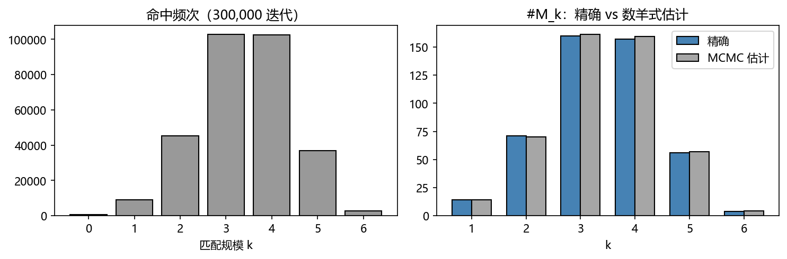
3.8 MCMC 的应用（Some Applications of MCMC）#
3.8.1 带约束的洗牌（Shuffling with Constraints）#
牌局（桥牌/红心大战）的难点是不知道对手手里有什么；随着打牌信息渐次揭示。合理策略：生成"随机而合法"的牌局分配，在完整信息下评估着法，取随机意义上好的策略（minimax 或随机最优）。
书的具体问题：某时刻全部牌已知，除这 18 张——梅花 3,4；方块 7,8；红心 2,3,5,6,7,8,9；黑桃 2,3,4,5,6,9,Q。三家各持 6 张，且已知：1 号手无梅花、2 号手无梅花与方块。任务：生成满足花色约束的随机分配。
起点随便给个合法分配（比如手 1 拿红心 2–7……），然后跑 Metropolis（目标 \(f=1\) 均匀 → 总是接受），提案对称且保证链不可约：
- 从合法分配出发；
- 从手 1、2、3 各随机选一张牌 A、B、C；
- 尝试交换 A↔B、A↔C、B↔C、A→B→C、A→C→B（随机顺序）；
- 第一个产生合法分配的交换被接受继续；都不合法则保持原分配。
该链可把任何合法洗牌变到任何其他合法洗牌；不变分布 = 合法分配上的均匀分布。照例要跑足够多迭代。
3.8.2 来自过去的耦合（Coupling from the Past）#
如果链能跑无穷久，\(X_t\) 就是 \(\pi\) 的精确样本——等价地，从无穷过去出发，\(X_0\) 恰好服从 \(\pi\)。惊人之处：这可以实现。
流程：预先选定一批随机数 \(\{r_{-1},r_{-2},\dots,r_{-10}\}\)（模拟链用）。从 \(t=-1\) 开始：对链的每个状态，用同一个"随机数" \(r_{-1}\) 前进一步。若 \(t=0\) 时所有状态坍缩到同一个状态，停，报告该状态；否则从 \(t=-2\) 重来（仍用最初选定的随机数——旧数字必须保存，往回加新数字而不是换数字）。
书例（股市链，Fig 3.11）：随机数 \(\{0.31, 0.57, 0.97, 0.85\}\)。\(t=-1\) 用 0.31：U→N、N→U、D→U——剩 {U,N} 未耦合；\(t=-2\) 用 0.57：U→D、N→N、D→N——{N,D}；再前推：N、D 都到 U——\(t=0\) 时全部状态坍缩到 U，报告 U。
两个反例告诫：
- 不能一耦合就停（书链 \(P'\)，\(\pi=[1/5,3/5,1/5]\)，书 Fig 3.12）：只在状态 2 可耦合；用随机数 \(\{0.86,0.39,\dots\}\)，若 \(t=-1\) 就停会永远返回同一值。正确流程：耦合后必须继续把预定的随机数用完（从 \(-2\) 走到 0），本轮结果才有效（书演示：结果为状态 3）。
- 不能用固定步数"重开"（书链 \(P''\)，式 (3.29) 的 7 态链）：只可能在状态 4 耦合，且耦合后至少要 3 步才到得了状态 1 或 7；固定 6 步不耦合就重启会系统性低估状态 1、7 的频率（书习题 8 让你实测这个偏差）。
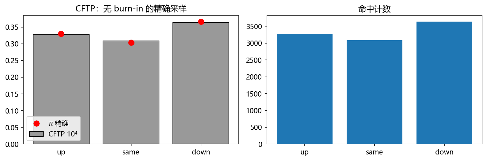
补充（Dunn & Shultis §6）：MCMC 实操口径
Dunn §6 与本章同一套数学，但补了两件实务：(1) **burn-in 与样本间隔（thinning）**的常用经验做法——只保留每第 k 个样本以降低自相关（代价是丢信息），与书"burn-in 后全记"的口径可以并用；(2) 收敛诊断——多链从不同起点出发比对轨迹（Gelman–Rubin 思想），对应书"烧多久实验定"。第 6 章贝叶斯推断里两者都会用上。
坑与陷阱#
1. 链样本是相关的——方差公式要修正
遍历定理保证时间平均收敛，但样本相关使 \(\operatorname{var}(\bar r)\neq\operatorname{var}/n\)：第 2 章式 (1.25) 的 \(1/n\) 缩放对 MCMC 失真（有效样本量 < n）。batching（§2.6.3）在此二次登场：批均值近似独立后才能挂置信区间。
2. 提案不对称却用纯 Metropolis → 系统性偏
实验 10：上步提议率 2 倍时，纯 Metropolis 的直方图整体右偏且不会随样本量消失。凡提案依赖状态，一律写 MH 修正 (3.28)。
3. burn-in 不可省，长度只能实验定
初态大概率不是 Boltzmann/\(\pi\) 样本；从第 1 步就开始记会把初值偏差烧进统计量。诊断手段：多条独立链轨迹重合、累计均值稳定（Dunn 补充框）。
4. 极小邻域会卡谷，极大邻域采不深
倒数平方目标（实验 4）：纯局部提案过不了 \(x=7\) 的深谷。提案切换（90% 局部 + 10% 全局）是廉价有效的药方——第 5 章优化里的"重启"思想同源。
5. 连续链的边界必须进提案或接受纪律
\(\Omega=[0,\infty)\) 时提议负数不能简单"反射成合法值"再收（那改了提案分布），要原地不动（自环）或把不对称修进 \(h\)（书 §3.2.1 的处理）。
6. coupling from the past 三禁忌
(a) 随机数用一遍就丢——回溯时必须复用旧数字；(b) 一耦合就停——必须走完本轮预定数列；© 固定步数不耦合就重启——引入偏差（书习题 8 实测）。三条全违反"从无穷过去"的语义。
7. Ising 降温太快锁亚稳态
快速降温得到上/下自旋岛屿拼贴（书 Fig 3.8），磁矩统计被亚稳畴污染；要全局最小能量态必须慢降温（退火）——第 5 章 SA 的物理镜像。
8. 计数用的比例要挑已知基准
sheep-counting 的比值 \(\#\mathcal M_{k+1}/\#\mathcal M_k\) 估计本身有方差，链式相乘误差累积；尽量从已知精确值（\(\#\mathcal M_0=1\)、\(\#\mathcal M_1=|E|\)）出发，必要时用多条基准交叉验证（书 Table 3.1 的多列估计）。
速览#
- 链三件套：邻域 \(N_x\)、转移概率 \(p_{xy}\)（行和 1，式 (3.1)）、时不变。
- 转移矩阵是计算器：\(p_{t+1}=p_tP\)（3.3）、\(p_t=p_0P^t\)（3.5）；正则链 \(p_t\to\pi\)，\(\pi P=\pi\)（3.6）；股市链 \(\pi=[37,34,41]/112\)（3.7）。
- 正则 = 不可约 + 非周期；周期链振荡（书 Fig 3.3）。
- Metropolis：状态定制提案 \(g_x\)（对称 3.8）+ 接受 \(\min(1,f(y)/f(x))\)（3.9）；只需 \(f\) 相对值。
- 正确性 = 细致平衡 (3.12)：\(f(x)g_x(y)h(x,y)=f(y)g_y(x)h(y,x)\) 由对称性成立；自环 ⇒ 非周期、提案不可约 ⇒ 链不可约。
- 遍历定理 3.1：时间平均 → \(\mathbb E_\pi(r)\)——MCMC 记分证书。
- 统计力学：熵 \(S=k_B\log n\)（3.16）、\(dS/dE=1/T\)（3.19）、Boltzmann 因子 \(e^{-E/k_BT}\)（3.20）、分布 (3.21) 与配分函数 (3.22)。
- Ising：能量 (3.26)、接受率 (3.27) 中 \(Z\) 消失；2×2 枚举验证 \(Z=16.004/121.22\)；相变/居里点/退火。
- MH (3.28)：非对称提案把 \(g\) 的比值补进接受率；对称时退化为 Metropolis。
- 计数 = 采样：数羊范式；图匹配的加/删/换提案，频次比链式估计 \(\#\mathcal M_k\)。
- 约束洗牌：合法分配为状态、三手取牌尝试五种交换、合法才收。
- CFTP：同一随机数驱动所有状态从 \(t=-k\) 前进，坍缩即得 \(\pi\) 精确样本；旧随机数必须保存。
术语速查#
| 英文 | 中文 | 一句话 |
|---|---|---|
| Markov chain | 马尔可夫链 | 未来只依赖现在的随机序列 |
| neighborhood \(N_x\) | 邻域 | 从 \(x\) 一步可达的状态集 |
| transition matrix | 转移矩阵 | \(P=(p_{xy})\)，行随机 |
| state probability vector | 状态概率向量 | \(p_t=X_t\) 的分布（行向量） |
| invariant distribution | 不变分布 | \(\pi P=\pi\)，\(p_t\) 的极限 |
| irreducible / aperiodic | 不可约 / 非周期 | 互相可达 / 返回周期无公因子 |
| Metropolis algorithm | Metropolis 算法 | 提案+接受，\(h=\min(1,f(y)/f(x))\) |
| proposal process | 提案过程 | \(g_x(y)\)，对称性 (3.8) |
| acceptance discipline | 接受纪律 | \(h(x,y)\)，可依赖当前状态 |
| detailed balance | 细致平衡 | \(\pi(x)p_{xy}=\pi(y)p_{yx}\)（3.12） |
| ergodic theorem | 遍历定理 | 时间平均=空间平均（定理 3.1） |
| microstate / phase space | 微观态 / 相空间 | 完整规格 / 所有可能微观态 |
| macroscopic observable | 宏观观测量 | 聚合可测量（磁矩等） |
| entropy | 熵 | \(S=k_B\log n\)（3.16） |
| temperature | 温度 | \(dS/dE=1/T\)（3.19） |
| heat bath | 热库 | 恒温大系统 |
| Boltzmann factor / distribution | Boltzmann 因子/分布 | \(e^{-E/k_BT}\)；(3.21) |
| partition function \(Z\) | 配分函数 | (3.22)，MCMC 中不用算 |
| Ising model | Ising 模型 | 格点 ±1 自旋，(3.26) 能量 |
| periodic / free boundary | 周期 / 自由边界 | 环面拼接 / 边界少邻居 |
| burn-in period | 烧入期 | 丢弃开头若干迭代 |
| Curie point / phase change | 居里点 / 相变 | 磁矩分布单峰↔双峰 |
| annealing | 退火 | 慢降温避开亚稳态 |
| Metropolis–Hastings | MH 算法 | 非对称提案修正 (3.28) |
| matching / monomer / dimer | 匹配 / 单体 / 二聚体 | 不共端点边集 / 未覆盖点 / 覆盖边 |
| sheep-counting paradigm | 数羊范式 | 用已知比例×样本频次计数 |
| coupling from the past | 来自过去的耦合 | 精确采样 \(\pi\) 的 CFTP |
覆盖自查#
原书小节 → 笔记位置
| 原书位置 | 内容 | 笔记位置 |
|---|---|---|
| §3.1 | 离散马尔可夫链、时不变 | §3.1 引言 |
| §3.1.1 | 图上随机游走 (3.1)、股市例（Fig 3.2）、C (3.2)、实例/直方图、\(p_t\) | §3.1.1 |
| §3.1.2 | 转移矩阵 (3.3)–(3.5)、收敛、不变分布 (3.6)–(3.7)、正则两条件（Fig 3.3） | §3.1.2 |
| §3.2 | Metropolis：历史、提案对称 (3.8)、接受 (3.9)、伪代码 | §3.2 |
| §3.2.1 | 骰子极小邻域 (3.10, Alg 3.1, Fig 3.4)、极大邻域、提案切换（Fig 3.5）、连续链（Fig 3.6） | §3.2.1 |
| §3.2.2 | 质量流 (3.11)、细致平衡 (3.12)–(3.14) 与证明 | §3.2.2 |
| §3.3 | 遍历定理 3.1 及证明 | §3.3 |
| §3.4 | 微观态/相空间、分块计数、(3.15)、熵 (3.16)、接触系统 (3.17)–(3.19)、Boltzmann (3.20)–(3.23) | §3.4 |
| §3.5 | Ising：(3.24)–(3.27)、边界、burn-in、算法、2×2 表（Fig 3.7）、相变/退火（Fig 3.8, Alg 3.2） | §3.5 |
| §3.6 | MH (3.28)、骰子非对称例（Fig 3.9, Alg 3.3） | §3.6 |
| §3.7 | 数羊、单体-二聚体、匹配采样方案（Alg 3.4, Table 3.1） | §3.7 |
| §3.8.1 | 约束洗牌 | §3.8.1 |
| §3.8.2 | CFTP：股市例（Fig 3.11）、\(P'\) 反例、\(P''\) (3.29) 反例 | §3.8.2 |
| Notes | Markov 链参考、MH 泛化、收敛率、单调链上的 CFTP | 各补充框 |
| Problems 1–17 | 习题（谱隙 P½、Boltzmann 八态 P3、\(x^2e^{-x}\) 采样 P4、ESO 洗牌 P5、匹配 P10、CFTP P⅞、SNS 突变 P15–17） | 关键题入实验（P½→实验1，P7→实验11，P4→实验5） |
补充阅读（Dunn & Shultis §6）
§6.1 马尔可夫链速览、§6.2 Metropolis 与 MH（含提案选择的实操建议：步长调到接受率 ~25–50%）、§6.3 Gibbs 抽样（本书放第 6 章 §6.2，线性顺序届时对照）、§6.4 MCMC 实用问题（burn-in、thinning、诊断）。